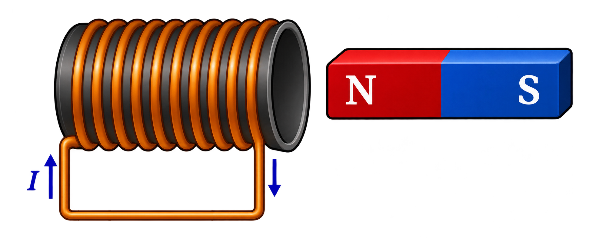
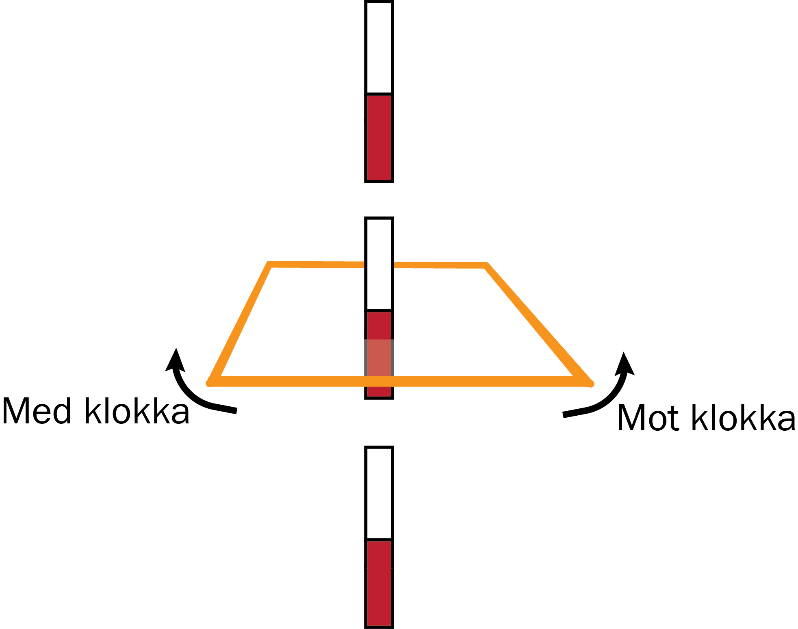
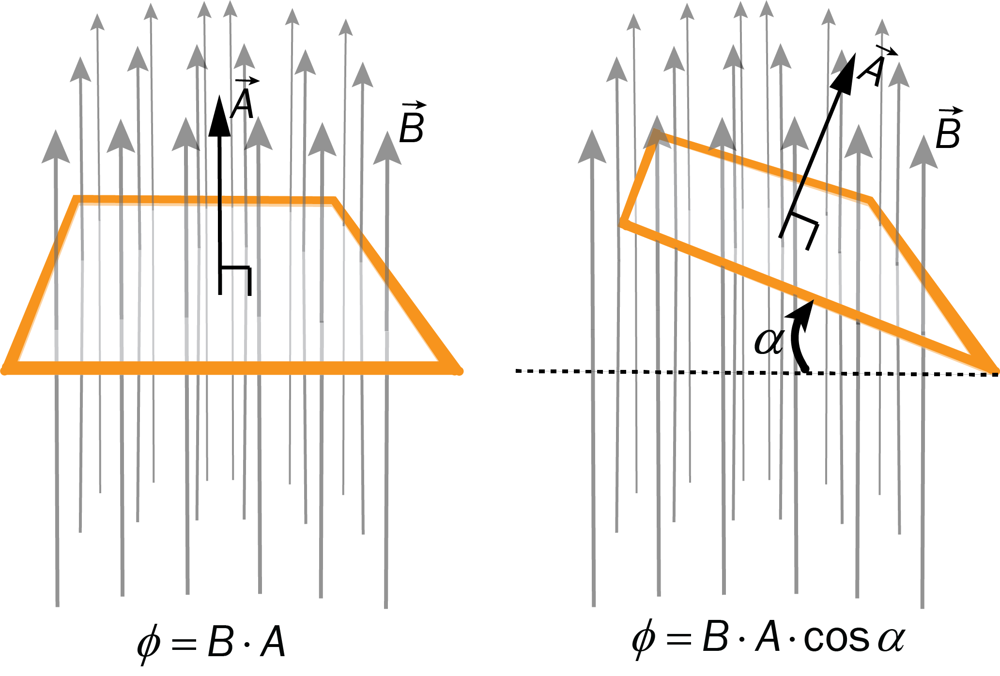
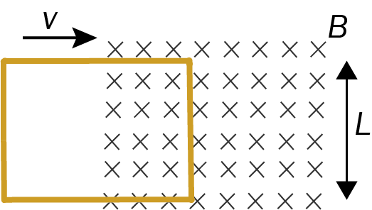
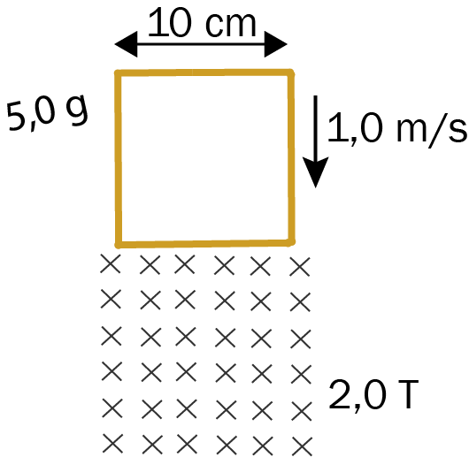
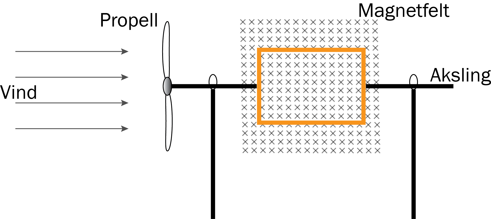
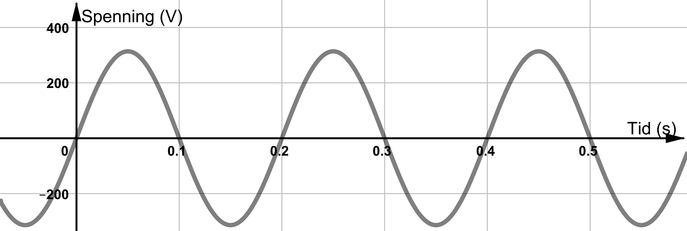
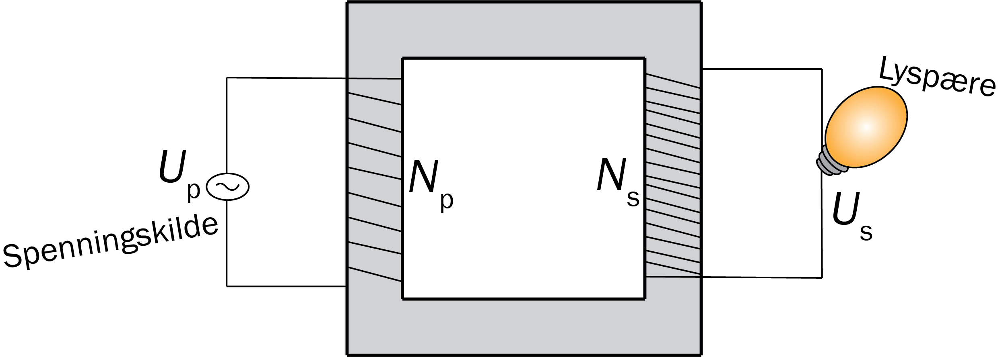

Faradays induksjonslov
Når det skjer en endring av mengden med magnetfelt gjennom en lukket strømsløyfe, induseres (lages) det en elektrisk strøm.
Lenz's lov: Retningen på strømmen motvirker det som induserer strømmen.
Eksempel
En magnet beveger seg i nærheten av en spole. Det induseres en strøm med retning som vist i figuren.

Hvilken retning beveger magneten seg?
Dermed dytter magnetfeltet fra spolen stavmagneten mot høyre.
Siden den induserte strømmen motvirker det som induserer strømmen, må dette bety at magneten beveger seg mot spolen.
Eksempel
En magnet faller gjennom en strømkrets, slik figuren viser.
Hvilken retning induseres det en strøm når
- magneten faller mot kretsen?
- magneten har falt gjennom, og er på vei videre nedover?
- strøm mot klokka når magneten er på vei mot kretsen, for å lage et magnetfelt som bremser magneten.
- strøm med klokka når magneten har falt gjennom, for å lage et magnetfelt som bremser magneten.
Magnetisk fluks: Magnetisk fluks \(\phi\) er mengde med magnetfelt gjennom en lukket krets: \[ \phi = \vec{B} \cdot \vec{A} = B \cdot A \cdot \cos \alpha \] hvor \(B\) er flukstetthet (aka. feltstyrke) og \(A\) er arealet av åpningen til strømsløyfen.

Faradays induksjonslov: Det induseres en spenning \(U=\varepsilon\) når det skjer en fluksendring gjennom en lukket strømkrets: \[ \varepsilon = - \frac{\Delta \phi}{\Delta t} \]
Eksempel
En ledersløyfe med areal 0,025 m\(^2\) ligger i et magnetfelt med flukstetthet (feltstyrke) 2,0 T. Resistansen i kretsen \(R\) = 10 Ω. Arealvektoren og fellinjene er parallelle. I løpet av 0,10 sekunder roteres sløyfa slik at α = 60\(^{\text{o}}\).Bestem størrelsen og retningen til strømmen som induseres i kretsen.
Rektangulær strømsløyfe i magnetfelt

Når en rektangulær ledersløyfe går inn eller ut av et magnetfelt med farten \(v\), blir det indusert en spenningen gitt ved \[ \varepsilon = vBL \] hvor \(L\) er lengden av lederen som beveger seg vinkelrett på fletet og farten.Eksempel
En ledersløyfe med resistans 20 \(\Omega\) faller inn i et magnetfelt, slik figuren viser.
Bestem akselerasjonen til sløfa idet den begynner å bevege seg inn i feltet.Energiproduksjon
For å produsere elektrisk strøm bruker man energien fra vind-, vann eller atomkraft for å skape en endring av magnetisk fluks gjennom en lukket krets. Vi kan f.eks. bruke vind til å rotere en propell, som er festet til en krets som roterer i et magnetfelt.
Spenningen som produseres av en roterende strømsløyfe er \[ \varepsilon = - \frac{\Delta \phi}{\Delta t} = \left( B \cdot A \cdot \cos \omega t \right)' = \omega B A \sin \omega t \] hvor \(\omega = \frac{2\pi}{T} \) er vinkelfarten, der \(T\) er rundetiden.Eksempel
Spolen i vindmøllen ovenfor har et tverrsnittareal på 0,50 m\(^2\) og den har 200 vindinger. Den bruker 0,20 sekunder på en omdreining. Den magnetiske flukstettheten er 0,10 T.Tegn en graf som viser den induserte spenningen.
Den induserte spenningen blir dermed \[ \varepsilon = n \cdot \omega B A \sin \omega t = 200 \cdot \frac{2\pi}{0\text{,}20} \cdot 0\text{,}10 \cdot 0\text{,}50 \cos \left( \frac{2\pi}{0\text{,20}} \cdot t \right) = 314 \cos \left( 10\pi \cdot t \right)\]


Eksempel
Spenningen i stikkontakter er 220 V. En PC-lader tranformerer spenningen til 20 V.Hva er forholdet mellom antall vindinger i primær- og sekundærspolen i transformatoren i PC-laderen?
Eksempel
Spenningen i stikkontakter er 220 V. En PC-lader trekker en strøm på 0,50 A fra stikkontakten og tranformerer spenningen til 20 V.Hvor stor strøm leverer laderen til PC'en?